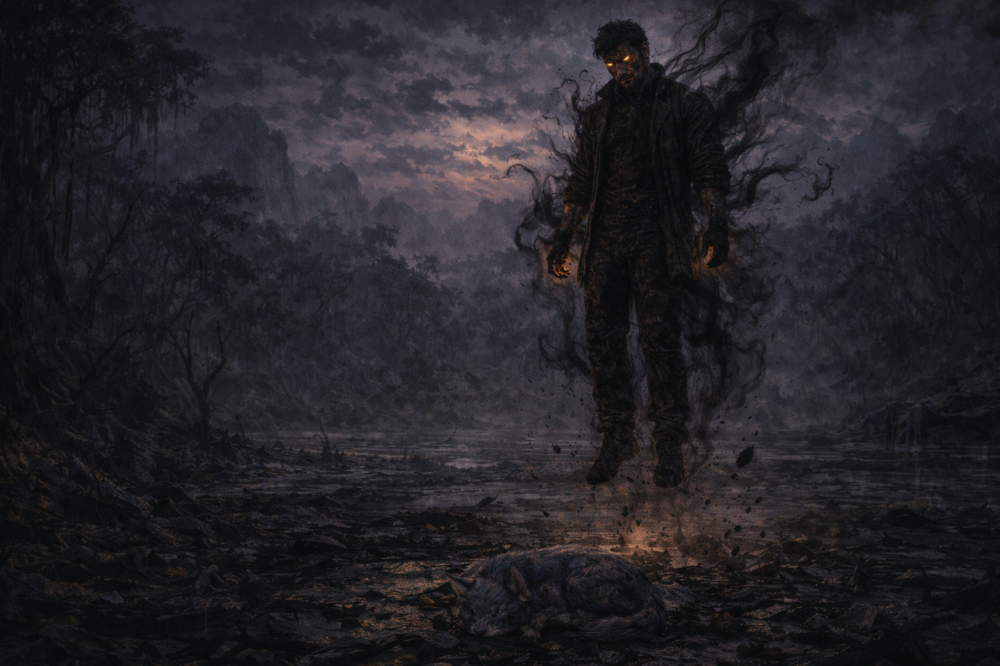

El altar brilló intensamente cuando Tony se acercó. Era una energía antigua, oscura y hambrienta que llevaba siglos esperando a alguien lo suficientemente vacío como para recibirla. Tony extendió la mano sin pensarlo. La Golden Gun pulsó una última vez y luego se fundió con su piel, desapareciendo dentro de él como si siempre hubiera pertenecido ahí. Un grito desgarrador llenó la cueva. Era la voz de Tony pero no era Tony. Salió de la cueva envuelto en una energía negra que ondulaba a su alrededor. El planeta tembló bajo sus pies. Las criaturas que antes lo atacaban ahora huían despavoridas. Los árboles se marchitaban a su paso. El fango del lago se tornó negro y espeso como petróleo.
KAWA lo esperaba afuera. Al verlo, retrocedió asustada. Pero no huyó. Nunca huía de Tony. Se acercó despacio, ladrando con desesperación, mordiéndole la mano intentando despertar algo en él. Intentando encontrar al Tony real que quedaba enterrado bajo toda esa oscuridad. Tony la miró por un momento. Algo parpadeó en sus ojos, un destello fugaz de reconocimiento. Pronunció su nombre en voz baja. Kawa. Pero la oscuridad era más fuerte. La energía que lo consumía no toleraba afectos. KAWA cayó silenciosamente mientras intentaba salvar a quien más amaba.
Tony no lloró. Ya no podía. Se elevó lentamente sobre el planeta y miró el horizonte infinito del espacio. Había universos enteros esperando ser destruidos. Planetas llenos de criaturas que no sabían lo que se les venía. Y él tenía todo el tiempo del mundo. Donde antes había amor, ahora había vacío. Donde antes había dolor, ahora había poder. Elvira lo había roto. Y de esas piezas rotas había nacido algo que el universo entero lamentaría.
